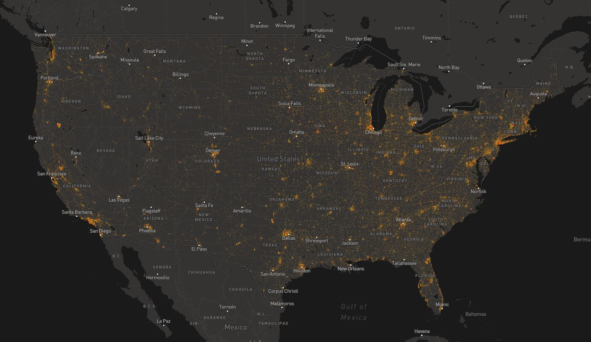

Other types of maps
Transportation Mapping in the US
National Transportation Atlas Database
National Transit Map, released in August 2016 by the Bureau of Transportation statistics
>Contains fixed-guideway and fixed-route transit service
BTS Map of Transportation Noise
BTS
BTS Map of Transportation Noise
BTS

BTS Map of Transportation Noise
BTS